A little about me


I still remember the first save the date I ever painted — sitting at my kitchen table way past midnight, terrified I'd ruin the only copy I had. That feeling never really left. Every piece I paint still carries a bit of it: nerves and joy, tangled together, because someone trusted me with a moment that matters to them.


Meet the artist
I grew up in Rio surrounded by color — my grandmother painted, my mother sewed, and I somehow landed somewhere in between, always with a brush in one hand and a sketchbook that never leaves my side.
Pillartss actually started with my own brother: he asked me to paint a watercolor for his wedding, and I said yes without really knowing what I was doing. Then a friend asked for hers too, and somewhere between the two, painting weddings quietly became my whole heart. I moved to Madrid to study Graphic Design at UDIT, and these days you'll usually find me at my desk, watercolors out, working on someone else's love story, one brushstroke at a time.
If there's one thing I want every couple to feel when they open their invitation, it's that someone truly saw them. That's what keeps me painting.
Work With MeGot a story worth painting?
Get in Touch